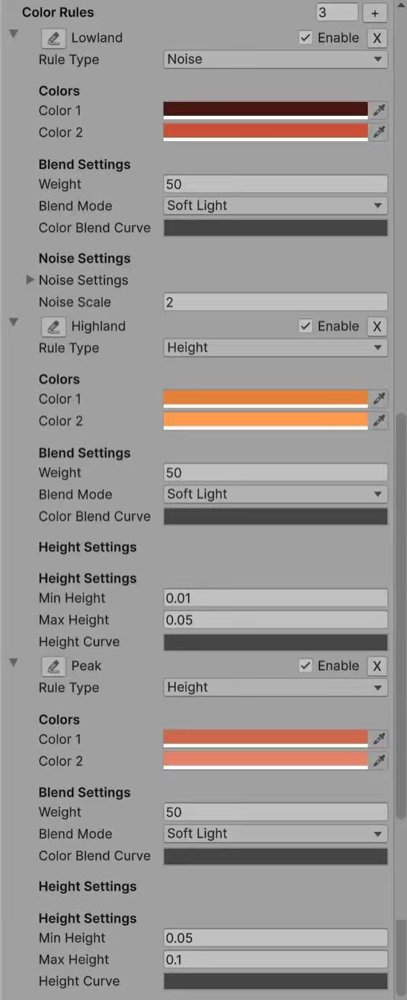
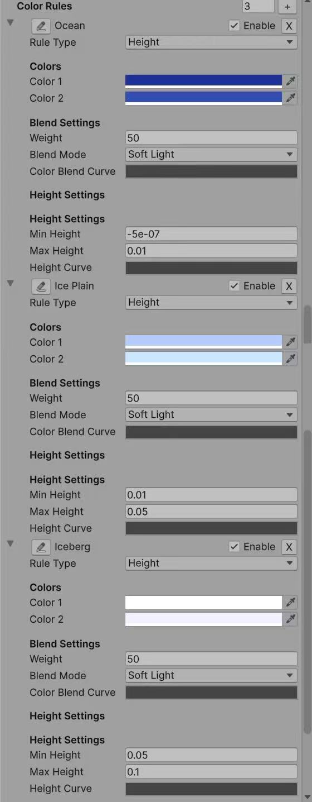

Summary
✅ Multi-Layer Noise Terrain Generation System - High-performance procedural planet generation based on Unity Jobs System
✅ Intelligent Coloring System - Multi-rule color classification based on height, slope, noise, and latitude
✅ Custom Editor Tools - NoiseVisualizer2D real-time preview tool + ProceduralSurfaceEditor
✅ Preset Planet Templates - Three complete biome configurations for Earth, Mars, and Ice worlds
✅ Materials and Post-Processing - Water surface reflections + Skybox rotation + Global post-processing optimization
Terrain Generation
Basic Code (CatLikeCoding)
In this project, I originally used this Procedural Surfaces project of CatLikeCoding It contains the basic noise and how to generate the planet by a single layer of noise.
Noise Combination
What this job does (high level)
Inspired by Sebstian Lague's procedural planet, I found that the planet after combination of many layers of noises can be more detailed and able to have more possibilities. To implement the combined job, I created a CombinedSurfaceJob, which is a Burst-compiled IJobFor that procedurally displaces a mesh surface by stacking multiple noise layers and then recomputing normals/tangents per vertex quad. It supports both planes and spheres with correct derivatives for shading.
Data layout & execution model
The mesh is authored/processed in quads of 4 vertices. Each iteration i of the job reads/writes one Vertex4: Vertex4 groups four SingleStream.Stream0 structs: v0…v3 (position, normal, tangent, etc.). The job obtains a typed view over the vertex buffer via
meshData.GetVertexData<SingleStream.Stream0>().Reinterpret<Vertex4>(16 * 4). 16 is the size (in bytes) of one SingleStream.Stream0 lane written four times per quad → 64 bytes stride.The job is scheduled with: ScheduleParallel(meshData.vertexCount / 4, resolution, dependency) so the work count equals the number of quads.
Inputs
- Vertices buffer (writable) as
NativeArray<Vertex4>. - Noise layers as
NativeArray<NoiseLayerData>, copied from managed array and disposed after completion. - Domain transform (
SpaceTRS):domainTRS(3×4) to transform positions into noise space.derivativeMatrix(3×3) available for derivative mapping (here the code builds its owndomainMatrixfromdomainTRS).
- Switches/scalars:
isPlane— selects plane or sphere displacement path.minHeight— clamps the final combined noise value.elevation— global multiplier for per-layer displacement and derivatives; if0, derivatives are zeroed to yield a flat surface.
Layer model & blending
Each enabled NoiseLayerData contributes a Sample4 (value + x/y/z derivatives for the 4 vertices in the quad). The flow per layer:
Sample base noise
Depending on noiseType, the job calls one of:
Lattice3D<LatticeNormal, Perlin>Lattice3D<LatticeNormal, Smoothstep<Turbulence<Perlin>>>Lattice3D<LatticeNormal, Value>Simplex3D<Simplex|Smoothstep<Turbulence<Simplex>>|Value>Voronoi3D<… Worley/SmoothWorley/Chebyshev … F1/F2/F2MinusF1>
All calls use the transformed positions (float3×4) and the layer's noiseSettings (frequency, octaves, lacunarity, persistence, seed, etc.).
Apply displacement scale & elevation
layerNoise *= layer.noiseSettings.displacement * elevation. If elevation == 0, all derivatives are forced to 0 for stability (flat normals/tangents).
Compute spatial weight
Per-layer contribution is modulated by a procedural weight from NoiseLayerData.GetWeight(position) (increased diversity compared to the original version): Weight uses Perlin on (x,z) scaled by weightFrequency and mixes in a hash seeded by noiseSettings.seed. The final weight is remapped to [weightMin, weightMax].
Accumulate
Weighted values and derivatives are summed into a single combinedNoise for the quad:
combined.v += layerNoise.v * weight
combined.dx += layerNoise.dx * weight
combined.dy += layerNoise.dy * weight
combined.dz += layerNoise.dz * weightGlobal clamp
After all layers: combined.v = max(combined.v, minHeight).
Applying the displacement (plane vs. sphere)
Plane path (SetPlaneVertices)
Displacement: write noise.v directly into each vertex's y component.
Normals: derived from dx, dz using analytic formula normal = normalize( (-dx, 1, -dz) ).
Tangents: build from dx (no z-slope contribution), with handedness w = -1. This yields consistent shading for height-mapped planes.
Sphere path (SetSphereVertices)
Radial displacement: Values are shifted by +1 (so 1 means the un-displaced radius); derivatives are normalized by v to be relative to the sphere radius:
noise.v += 1
noise.dx /= noise.v
noise.dy /= noise.v
noise.dz /= noise.vTangent update (if preexisting tangents are nonzero): The code computes how tangents change with displacement (td) and re-orthonormalizes with NormalizeRows(). Handedness is set to -1.
Normals: Derived from displaced position p and the parametric derivatives; the code constructs a matrix whose rows are normalized to recover unit normals per vertex.
Positions: Each position is scaled radially by noise.v (per-vertex x/y/z kept in direction; length scaled). This preserves smooth shading on spherical meshes with analytic normals/tangents that reflect the displacement field.
Elevation & minHeight semantics
elevation is a global gain applied to every layer's displacement. It scales both height and derivatives. Setting it to 0 collapses all variation (positions become base shape; normals/tangents are flattened accordingly). minHeight is a post-blend clamp on the combined scalar value. On planes it clamps height; on spheres (after shifting by +1) it effectively enforces a minimum radial scale once the value is added to 1.
Scheduling & lifetime
ScheduleParallel packs all parameters, creates the NativeArray<NoiseLayerData>, and returns the JobHandle. Disposal of the noiseLayers native array is chained to the returned handle. Upstream (ProceduralSurface.GenerateMesh), the caller completes the handle, applies mesh data, and optionally recalculates (or uses the job's) normals/tangents and generates vertex colors.
Vertex colors (context)
Although not part of CombinedSurfaceJob, ProceduralSurface can run a separate ColorJob afterwards: Computes a height on the sphere from radial distance (normalized to [-1, 1] using base radius ± max displacement). Computes slope as the angle between vertex normal and world up. Evaluates a list of color rules (height/slope/noise/latitude/blend) and writes mesh.colors. This decouples geometry generation (this job) from appearance classification (color job).
Performance & correctness notes
- Burst + IJobFor: SIMD-friendly loops over quads; good cache behavior.
- Derivatives: Carry through the entire pipeline, enabling analytical normals/tangents and avoiding expensive post-processing, especially for spheres.
- Weights per vertex:
GetWeightcurrently samples 2D Perlin on(x,z)of v0 position for the quad. If you want per-vertex weights, adjust to sample each vertex. - Reinterpret stride: Ensure the stride passed to
Reinterpret<Vertex4>(…)matches the actual bytes per quad. Here it's 64 bytes (16 * 4). A mismatch leads to errors like "expected X but is Y bytes". - Elevation==0 fast path: Zeroing derivatives prevents NaNs and keeps shading stable when flattening the surface.
Extending the system
- Custom layer masks: Sample
GetWeightin 3D space, or incorporate latitude/slope into weights. - Domain derivatives: If your
SpaceTRScan skew/rotate, you may map derivatives viaderivativeMatrixto account for anisotropic domains. - LOD / tiles: Partition the mesh and schedule multiple jobs; combine with culling.
- Signed displacement on spheres: If you want depressions below the base radius, remap
noise.varound0(e.g.,radius = base + disp) instead of the current+1normalization.
Typical usage (from ProceduralSurface)
Build NoiseLayerData[] from enabled NoiseLayer components. Call:
CombinedSurfaceJob.ScheduleParallel(
meshData, resolution, activeLayers, domain,
isPlane: meshType < MeshType.CubeSphere,
minHeight, elevation,
dependency: meshJobs[(int)meshType](
mesh, meshData, resolution, default,
Vector3.one * GetMaxDisplacement(), true
)
)Complete handle, apply mesh, optionally recalc normals/tangents (not strictly needed for planes/spheres here), generate vertex colors, and run mesh optimizations.
In one sentence
CombinedSurfaceJob procedurally deforms plane/sphere meshes by stacking weighted noise layers with analytic derivatives, then writes consistent positions, normals, and tangents per vertex quad—scalable via elevation, clamped by minHeight, and ready for downstream color classification.
Comparison
Single Layer Planet
Having the basic terrain shape but cannot implement more complex terrains

Multiple Layer Planet
Supports much more details and complex terrain features

Noise Demonstrations
Here are some GIF demonstrations showing the different noise effects:

Simple Layer Noise
Shows basic single-layer noise generation:

Multiple Layer Noise
Demonstrates the combination of multiple noise layers for detailed terrain:

Min Height & Elevation
Shows how minHeight and elevation parameters affect terrain generation:
Shader
Vertex Color
In my implementation, I directly assign vertex colors in C# during mesh generation (GenerateVertexColors inside ProceduralSurface). This means the vertex buffer already contains a per-vertex Color attribute when passed into the GPU.
Thanks to this, in Shader Graph I can simply sample the Vertex Color node instead of recomputing terrain classification in the shader. This provides two major benefits:
- Performance – all classification (height/slope/noise/latitude/blend) is done once on the CPU in jobs, rather than per-pixel on the GPU.
- Flexibility – I can freely author color rules and see them directly baked into the mesh.
Color Rules
The logic is rule-driven: Each ColorRule defines:
- The condition (Height / Slope / Noise / Latitude / Blend)
- Two possible colors (
color1,color2) - A blending curve or interpolation strategy
During mesh generation, the active rules are evaluated in a parallel job (ColorJob). Each vertex color is decided by applying the rules in sequence and then blending results.
Pseudo-code
for each vertex v:
height = normalize(v.position.magnitude) // or y for plane
slope = angle(normal[v], up)
color = white
for each rule r in colorRules:
factor = r.Evaluate(height, slope, v.position, v.normal)
candidateColor = Lerp(r.color1, r.color2, factor)
color = Blend(color, candidateColor, r.weight, r.blendMode)
v.color = colorColor Rules

Noise Rule
Uses Perlin noise to create patchy, irregular patterns

Height Rule
Colors terrain based on elevation ranges
Slope Rule
Applies colors based on terrain steepness

Latitude Rule
Creates banded gradients based on Y-position

Blend Rule
Final result after blending all color rules
1. Height (most common)
Define ranges of elevation that map to different biomes. Perfect for terrain-like distribution: e.g., ocean → beach → plain → mountain → snow. Preset Earth/Ice palettes are entirely generated by this rule.
factor = InverseLerp(minHeight, maxHeight, height);
factor = heightCurve.Evaluate(factor);
color = Lerp(color1, color2, factor);2. Noise
Splits areas according to Perlin noise function. Produces patchy, irregular patterns (e.g., moss vs. soil, craters vs. flatlands). Reuses the same noise function as terrain generation, ensuring consistency. Used for Martian lowlands.
factor = PerlinNoise(position.x * noiseScale, position.z * noiseScale);
color = Lerp(color1, color2, factor);3. Slope
Classifies areas by steepness angle. Useful for distinguishing cliffs vs. flat fields (e.g., add darker rock colors on slopes).
factor = InverseLerp(minSlope, maxSlope, slope);
color = Lerp(color1, color2, factor);4. Latitude
Computes latitude by normalizing Y-axis in [-1, 1]. Produces banded gradients (like polar caps, equatorial forests).
factor = InverseLerp(-1f, 1f, position.y);
color = Lerp(color1, color2, factor);5. Blend
A flexible "catch-all" rule. Allows arbitrary mixing of two colors using a given blend mode (Add, Multiply, Overlay, Screen, SoftLight). Useful when combining multiple biome colors smoothly.
factor = 0.5f; // default blend
color = Blend(baseColor, Lerp(color1, color2, factor), weight, blendMode);Key Advantages
- CPU precomputation: expensive classification (noise, slope, latitude) is not recalculated in the shader.
- Direct Shader Graph integration: simply plug in the Vertex Color node.
- Biome flexibility: easy to define Earth-like, Mars-like, or fantasy planet palettes by authoring different rules.
- Extra realism: metallic/smoothness adjustment on water/ice adds material-based realism beyond color.
Material
Water Material Implementation in Shader Graph
Water material with metallic, smoothness, and color adjustments:
In the shader graph, I implemented water material properties by detecting blue colors in the vertex colors. Here's how it works:
- Use a Split node to separate the RGB channels of the vertex color
- Compare the Blue channel value with Red and Green channels to detect water areas
- If Blue > (Red + Green), we consider it as water and adjust material properties:
- Set Metallic to 0.8 for reflective water surface
- Set Smoothness to 0.9 for glossy water appearance
- For non-water areas, keep default material properties
This creates realistic water surfaces that reflect light differently from terrain:

Click to view ShaderGraph implementation

Preset
Earth
Earth-like planet with ocean, beach, plains, mountains, and snow:
Earth Planet Animation
Loading may take a few seconds...
Full Earth-like planet demonstration:

Earth Color Rules
Click to view Earth color rules

Mars
Mars-like planet with lowlands, highlands, and peaks:
Mars Planet Animation
Full Mars-like planet demonstration:

Mars Color Rules
Click to view Mars color rules
Ice
Ice world with ocean, ice plains, and icebergs:
Ice Planet Animation
Full ice world demonstration:

Ice Color Rules
Click to view Ice color rules
Tools
NoiseVisualizer2D
Noise Visualizer 2D Animation
Step 1: Basic Window Setup
Click Window -> Noise Visualizer 2D to open the tool
Step 2: Layer Management UI
Draw ProceduralSurface to the window

Step 3: Single Layer Preview
Click each layer to preview, or click Show All Layers to preview the combined effect

Step 4: Interactive Navigation
Zoom and pan controls for detailed inspection of noise patterns.

Step 5: Color Customization
Customizable color gradients for better noise pattern visualization.

Step 6: Layer Editing & Combined Preview
Layer editing capabilities and combined multi-layer preview functionality.
Purpose
NoiseVisualizer2D is a custom Unity EditorWindow that allows interactive 2D visualization of noise layers defined in a ProceduralSurface.
Its main goal is to provide real-time previews of how each noise layer (or their combination) looks in 2D space, which helps with debugging, fine-tuning, and authoring procedural terrains.
Key Features
- Integration with ProceduralSurface The window targets a
ProceduralSurfaceinstance and directly inspects its privatenoiseLayersfield (via reflection). Supports visualization of all noise types implemented inProceduralSurface.NoiseType. - 2D Texture Preview Noise values are sampled into a
Texture2Dgrid (previewTexture). Each pixel corresponds to a(x, z)position mapped into noise space. Noise values are normalized into[0, 1]and remapped into colors viaColor.Lerp(lowColor, highColor). - Layer Control Lists all noise layers in the target surface. Allows toggling layers on/off. Clicking Preview generates a single-layer preview. Clicking Show All Layers generates a weighted combined preview of all enabled layers.
- Combined Preview with Noise-Modulated Weights Each layer's contribution is scaled by its weight, which itself can be noise-modulated (via
NoiseLayer.GetWeight). For the combined preview: The system first computestotalWeightacross all enabled layers. Each layer's noise sample is then weighted proportionally. This produces a blended 2D noise map that matches the actual runtime blending in CombinedSurfaceJob. - Interactive Navigation Zoom: scroll wheel or slider (0.2× to 2×). Pan: right-click drag. Reset View: quick button to reset zoom/pan.
- Customization User-defined low/high colors (default black→white) to highlight noise contrast. Preview resolution adjustable (
previewSize = 256)
Workflow
- Open the Tool Available via Unity menu:
Window → Noise Visualizer 2D. - Select Target Surface Assign a
ProceduralSurfaceinstance in the window. The editor automatically extracts its noise layers. - Preview Noise Click a layer's Preview button to visualize only that layer. Click Show All Layers to preview the combined effect.
- Adjust View Use zoom and pan to focus on details. Change color gradient to better distinguish low vs. high regions.
Implementation Details
Generating a Layer Preview
For each pixel (x, y) in the preview texture:
- Map coordinates into noise space (scaled & offset by zoom/pan)
- Call
GenerateNoiseValue(layer, position): Dispatch to the correct noise generator (Perlin, Simplex, Voronoi, etc.) usingswitchonlayer.noiseType - Use the layer's
noiseSettings(seed, frequency, displacement) - Normalize result via
Mathf.InverseLerp(-0.5, 0.5, noiseValue) - Map the normalized value into
[lowColor, highColor]
Generating a Combined Preview
For each pixel:
- Compute weights via
layer.GetWeight(position) - Normalize weights by dividing each by
totalWeight - For each enabled layer: Sample noise value at
(x, z) - Multiply by normalized weight
- Accumulate into
combinedNoise - Clamp with
minHeightfrom the target surface - Map to
[lowColor, highColor]
Benefits
CombinedSurfaceJob, so the previews match runtime results.In one sentence
NoiseVisualizer2D is an interactive Unity Editor tool that renders 2D previews of ProceduralSurface noise layers—individually or combined with noise-modulated weights—providing immediate visual feedback for procedural terrain authoring.
Step-by-Step Development Process
Here's a detailed walkthrough of how the NoiseVisualizer2D tool was developed, showing each step of the implementation:
Development Insights
The step-by-step development process reveals several key insights:
- Iterative Design: Each step built upon the previous, allowing for continuous refinement of the user interface and functionality.
- User Experience Focus: The addition of interactive navigation (Step 4) and color customization (Step 5) significantly improved the tool's usability.
- Progressive Complexity: Starting with basic single-layer previews and gradually adding multi-layer support ensured a solid foundation.
- Real-time Feedback: The GIF demonstrations show how the tool provides immediate visual feedback, making terrain authoring much more intuitive.
ProceduralSurfaceEditor
Purpose
ProceduralSurfaceEditor is a Unity Custom Inspector for the ProceduralSurface component.
Instead of relying on Unity's default inspector, this editor provides structured UI controls for noise layers, color rules, and vertex color presets, making it easier to author procedural terrains.
Key Features
1. Noise Layers Management
category dropdown (Base, Mountain, Detail, Volcano, etc.).This structured layout replaces Unity's generic property drawer and gives fine-grained control per noise layer.
2. Color Rules Management
- Height Rule: min/max height + curve
- Slope Rule: min/max slope + curve
- Noise Rule: noise type, noise settings, noise scale
- Latitude Rule: latitude blend parameter
- Blend Rule: blend mode and weight
3. Vertex Color System Settings
Custom/VertexColor shader for visualization- Add Earth Preset → Adds 5 rules (Ocean, Beach, Plain, Mountain, Snow)
- Add Mars Preset → Adds 3 rules (Lowland, Highland, Peak)
- Add Ice Preset → Adds 3 rules (Ocean, Ice Plain, Iceberg)
These presets give quick starting points for different planet themes.
4. Other Fields
The inspector also exposes the main parameters of ProceduralSurface:
This ensures all relevant parameters are editable in one place.
Workflow
ProceduralSurface to a GameObjectProceduralSurfaceEditorCustom/VertexColor materialWhy Not Use Unity's Default Inspector?
Although Unity automatically exposes serialized fields, the default inspector is not practical for a system as complex as procedural terrain:
In one sentence
ProceduralSurfaceEditor is a custom Unity inspector that organizes noise layers, color rules, and vertex color presets into an intuitive UI—making procedural planet authoring faster, more structured, and more artist-friendly.
Postprocess and Skybox
Finally, I added a global volume and changed some postprocess params to make it looks much more greater:
Postprocess Settings

Skybox Configuration

At last, I chose a wonderful skybox for it and make it rotating:) Hope you like this project! It might be simple but I did learn a lot.
Web Development
🌟 Procedural Starfield Background
This webpage itself is a masterpiece of procedural generation! The animated starfield background you see is entirely generated using JavaScript and Canvas API, creating a living, breathing universe that responds to your device and viewport.
🎨 Live Procedural Generation
Every time you refresh the page, the starfield is completely regenerated with new star positions, sizes, and planetary configurations. No two visits are ever the same!
✨ Starfield Features
- Procedural Star Generation: 400+ stars randomly positioned and sized using mathematical algorithms
- Dynamic Parallax Animation: Stars move with depth-based speed - smaller stars move faster, creating realistic 3D depth
- Planetary Bodies with Atmospheres: Large stars become planets with atmospheric gradients, surface stripes, and swirling storms
- Procedural Ring Systems: 40% of large planets have randomly generated ring systems with elliptical transformations
- Color-Coded Star Types: Jupiter orange, Saturn yellow-brown, Uranus blue, Mars red-brown - each with unique atmospheric effects
- Real-time 60fps Rendering: Smooth animation using Canvas 2D context with optimized rendering loops
- Responsive Universe: Starfield adapts to any screen size, orientation, and device capabilities
- Flickering Star Effects: Smaller stars have subtle twinkling using sine wave functions
💻 Key Technical Implementation
Here are the core algorithms that bring this procedural universe to life:
🌟 Procedural Star Generation
The heart of the system - each star is generated with unique properties using mathematical randomness. The algorithm creates a realistic distribution where most objects are small stars, with occasional large planetary bodies that have atmospheric effects and ring systems.
// Generate 400 procedural stars with varied properties
stars = Array.from({length: 400}, () => {
const size = Math.random() * 2;
const isLargePlanet = size > 1.8 && Math.random() < 0.3;
const hasRings = isLargePlanet && Math.random() < 0.4;
return {
x: Math.random() * canvas.width,
y: Math.random() * canvas.height,
size: isLargePlanet ? size : size * 0.8,
speed: Math.random() * 0.5 + 0.2,
initialColor: baseColors[Math.floor(Math.random() * baseColors.length)],
hasRings: hasRings,
ringAngle: hasRings ? Math.random() * Math.PI * 2 : 0
};
});🌌 Parallax Depth System
This creates the illusion of 3D depth by making smaller stars move faster than larger ones. The mathematical relationship sizeFactor = 1 / (s.size + 0.5) ensures that distant stars (smaller) move faster, while nearby planets (larger) move slower, mimicking real-world perspective.
// Parallax movement - smaller stars move faster for depth effect
stars.forEach(s => {
const sizeFactor = 1 / (s.size + 0.5); // Smaller stars = faster movement
s.x += s.speed * sizeFactor * 0.3;
s.y += s.speed * sizeFactor * 0.15;
// Seamless boundary wrapping
if (s.x < 0) s.x = canvas.width;
if (s.x > canvas.width) s.x = 0;
});🪐 Atmospheric Rendering
Large celestial bodies are rendered with realistic atmospheric effects using radial gradients. The gradient creates a soft glow that extends beyond the planet's surface, simulating atmospheric scattering of light. Each planet type has its own color palette based on real astronomical observations.
// Create atmospheric glow using radial gradients
const gradient = ctx.createRadialGradient(s.x, s.y, 0, s.x, s.y, s.size * 8);
gradient.addColorStop(0, `rgba(${baseColor[0]}, ${baseColor[1]}, ${baseColor[2]}, 0.9)`);
gradient.addColorStop(0.3, `rgba(${baseColor[0]}, ${baseColor[1]}, ${baseColor[2]}, 0.8)`);
gradient.addColorStop(0.6, `rgba(${baseColor[0]}, ${baseColor[1]}, ${baseColor[2]}, 0.6)`);
gradient.addColorStop(1, 'rgba(0, 0, 0, 0)'); // Fade to transparent
ctx.fillStyle = gradient;
ctx.beginPath();
ctx.arc(s.x, s.y, s.size * 3, 0, Math.PI * 2);
ctx.fill();💫 Twinkling Animation
Smaller stars have a subtle twinkling effect achieved through sine wave functions. The Math.sin(Date.now() * s.speed * 0.005) creates a smooth, time-based oscillation that varies the star's opacity and creates the classic "twinkling star" effect seen in real night skies.
// Add twinkling effect using sine wave functions
const flicker = s.size <= 1.8 ? Math.sin(Date.now() * s.speed * 0.005) * 0.7 + 0.8 : 1;
const alpha = 0.5 + flicker * 0.5;
ctx.fillStyle = `rgba(255, 255, 255, ${alpha})`;
ctx.beginPath();
ctx.arc(s.x, s.y, s.size * 0.4, 0, Math.PI * 2);
ctx.fill();Web Design Philosophy
This webpage demonstrates how procedural generation concepts can be applied beyond game development:
- Interactive Documentation: The webpage itself becomes part of the project demonstration
- Visual Consistency: The space theme connects the Unity project with its documentation
- Performance Optimization: Efficient Canvas rendering ensures smooth animation on all devices
- Responsive Typography: Jersey 25 font with carefully tuned letter-spacing for optimal readability
- Animated Elements: Typewriter effects, twinkling stars, and smooth transitions enhance user experience
- Accessibility: High contrast colors and scalable text ensure content is accessible to all users
Conclusion
From Unity's procedural planet generation to this webpage's procedural starfield, the journey demonstrates how mathematical algorithms can create beautiful, dynamic content across different platforms. The same principles of randomness, layering, and real-time generation that power the Unity project also bring this documentation to life.
Thank you for exploring this procedural universe with me! 🌌✨